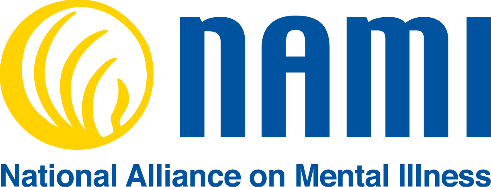
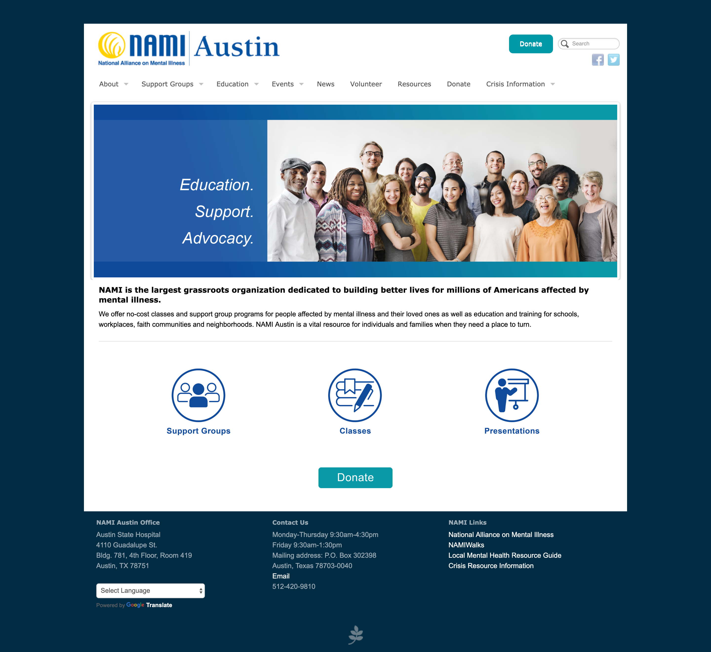
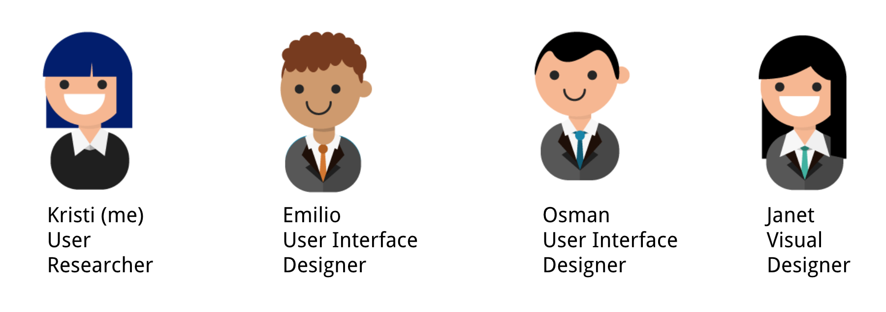

Case Study:NAMI Central Texas
Overview
Background: Who is NAMI?
NAMI stands for the National Alliance on Mental Illness. They provide educational programs, resources, and run events for anyone looking for support on mental illness, whether that’s someone struggling with a mental illness, someone with a loved one with a mental illness, or even community members that work with someone struggling with a mental illness.
Problem Definition
Our clients at NAMI Austin had done a lot of generative research on their own, and felt a redesign was necessary because:
- They were receiving phone calls on a daily basis from their users regarding issues with navigating their website.
- They were rebranding to NAMI Central Texas and felt their website visual design was outdated and didn’t reflect their values of Calm, Safe, and Secure.
Because NAMI had found these problems through their own generative research, and we were working on a short timeline, I decided it was best to focus on validating these issues through evaluative research.
Original NAMI Austin home page:
The Team
Outcome
The design went live within a month of our deadline. We were hoping to have it ready by the beginning of May 2019 for Mental Health Month, but due to the timing of deliverables and limitations of the volunteer developer, the website launch date was closer to June 2019. We lost our opportunity to see the spike in users during May, Mental Health Month, however, the feedback we received after the launch in June made our success even more pronounced.